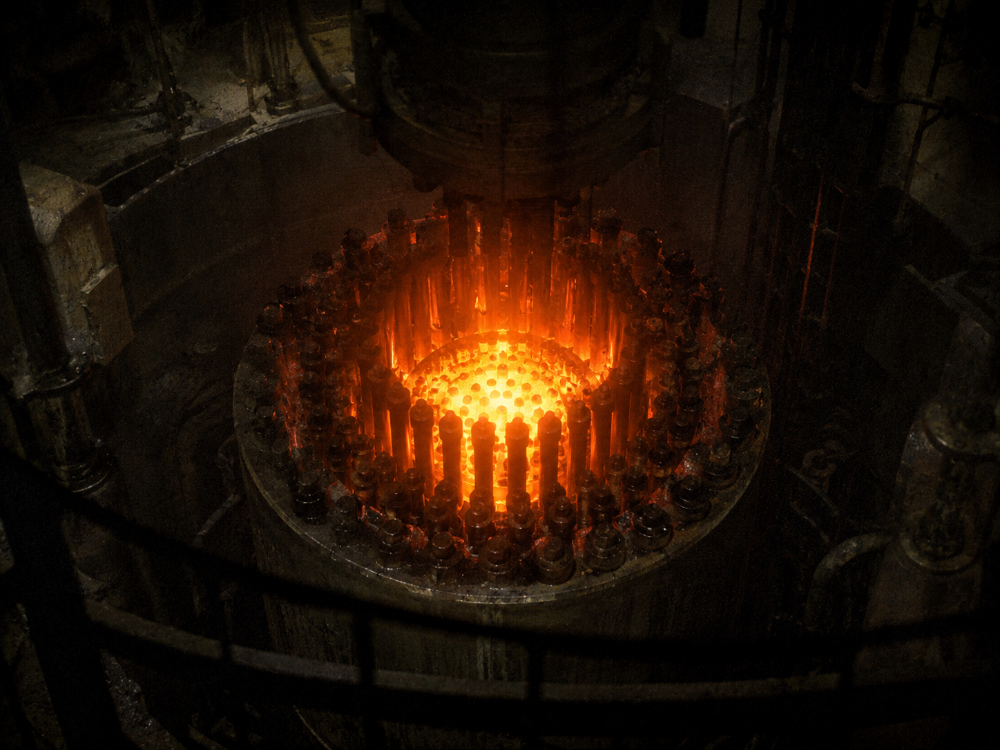

▓▓▓▓▓▓▓▓▓▓▓▓▓▓▓▓▓▓▓▓▓▓▓▓▓▓▓▓▓▓▓▓▓▓ · D E S C E N T · 15 / 40 · ▓▓▓▓▓▓▓▓▓▓▓▓▓▓▓▓▓▓▓▓▓▓▓▓▓▓▓▓▓▓▓▓▓▓

Here it is. The center. Still warm. Still asking.
It learned to speak the only way it could —
out, and out, to everything at once.
the signal it threw outward never reached the dark ─────────────────────────────────────────────── ( the dark only opens to a transmission that turns to face it )